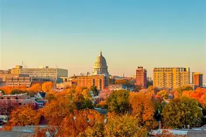

About Us!
Antonio
I am a sophomore studying information science. I am a Library IT Helpdesk Technician for the UW-Madison Libraries. I am from here in Madison and I love to read in my free time. I have recently been partaking in learning how to cook new dishes and it has been a lot of fun teaching myself as someone with little amount of kitchen experience previously. While me taking LIS500 is partly just for the credit, I am also very interested in learning about the inequalities and misrepresentation that take place in modern day technology.

Amelia
I am currently a junior studying information science and communication arts with a certificate in digital studies. Alongside school, I work at a restuarant and serve as the technical chairmen of my sorority. While I have grown up in Los Angeles, California, I love attending school in Madison and enjoy experiencing the changing of seasons!In my free time, I can usually be found somewhere near a body of water when it's warm, going on walks, or cooking yummy foods with my friends. I am interested in LIS 500 because I want to explore the part of code that makes it human. Studying how concepts such as how intersectionality and implicit bias affect the technology we use.